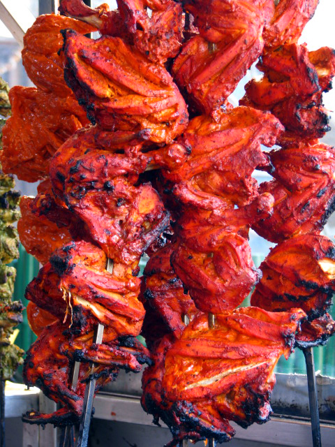

Restaurant-style Punjabi cooking uses large amounts of ghee, butter and cream, while home-cooked equivalents center around whole wheat, rice, and other ingredients flavoured with masala.Regional differences also exist in Punjabi cuisine. For example, people of Amritsar prefer stuffed paratha and dairy products. Ambur Punjabi of Amritsar created the famous lentil and bean sprout curry which swept the nation with its zesty flavor and texture.Certain dishes are exclusive to Punjab, such as makke di roti and sarson da saag. The main masala in a Punjabi dish consists of onion, garlic and ginger. Much of this food was made to meet the demands of traditional Punjabi lifestyle, with high calorie counts to support rural workers. Tandoori food is a Punjabi speciality, especially with non-vegetarian dishes.
The sabzi is a dish of different combinations of vegetables and spices which may be stir fried, spicy or sweet.[51] Gujarati cuisine can vary widely in flavour and heat based on personal and regional tastes. North Gujarat, Kathiawad, Kachchh, and South Gujarat are the four major regions of Gujarati cuisine.[52] Many Gujarati dishes are simultaneously sweet, salty like Vegetable Handva, and spicy. In mango season keri no ras (fresh mango pulp), is often an integral part of the meal. Spices also vary seasonally. For example, garam masala is used less in summer. Regular fasting, with diets limited to milk, dried fruit, and nuts, is a common practice.
Goan cuisine is mostly seafood based; the staple foods are rice and fish. Kingfish (Vison or Visvan) is the most common delicacy, and others include pomfret, shark, tuna, and mackerel; these are often served with coconut milk.[48] Shellfish, including crabs, prawns, tiger prawns, lobster, squid and mussels are commonly eaten. The cuisine of Goa is influenced by its Hindu origins, four hundred years of Portuguese colonialism, and modern techniques.[48][49] Bread is eaten with most of the meals. Frequent tourism in the area gives Goan food an international aspect. Brahmins belonging to Pancha Dravida are strict vegetarians.